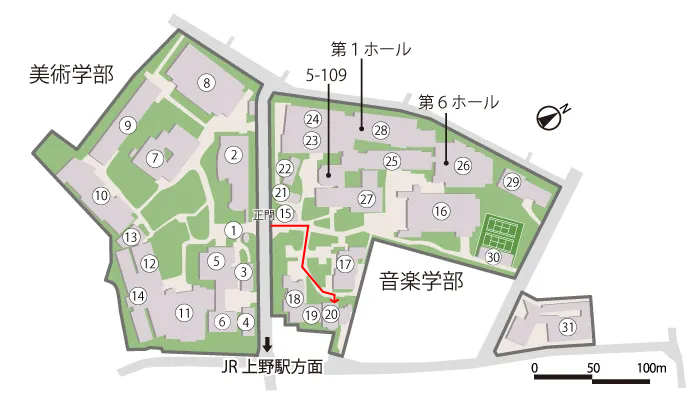

ご挨拶
第一期生有志展示「Respawn」を開催いたします。本展は、東京藝術大学大学院映像研究科に新設された「ゲーム・インタラクティブアート専攻」の第一期生による、初めての展覧会です。作品の形態は、ビデオゲームからボードゲーム、インタラクティブアート、インスタレーションなど、多岐にわたります。新設から最初の夏を迎える私たちは、本展のテーマに「Respawn」を掲げました。
「Respawn（リスポーン）」は、ビデオゲームにおいて、一度消失したキャラクターやオブジェクトなどが再びゲーム世界に現れることを意味します。しかし、プレイヤーは、単なるリセットではなくそれまでの記憶や経験を内包したまま、より強く新たな生を始めることができます。私たちは、異なる国籍や文化圏、そして多様な世代やキャリアを経てこの場所に集まりました。バックグラウンドもまた、音楽やデザイン、テクノロジー、そしてアートの文脈など、それぞれが異なる専門性を携えています。この「藝大」という新しいマップへリスポーンした私たちの作品をご覧ください。ゲーム・インタラクティブアート専攻
一期生一同
展示作品


開催概要
- 会期：
- 2026 年 7 月 17 日（金）〜 7 月 20 日（月）
- 開催時間：
- 11:00-17:00（初日のみ 13:00-17:00）
- 会場：
- 東京都台東区上野公園 12-8 東京藝術大学 アーツ & サイエンスラボ 1F4F
